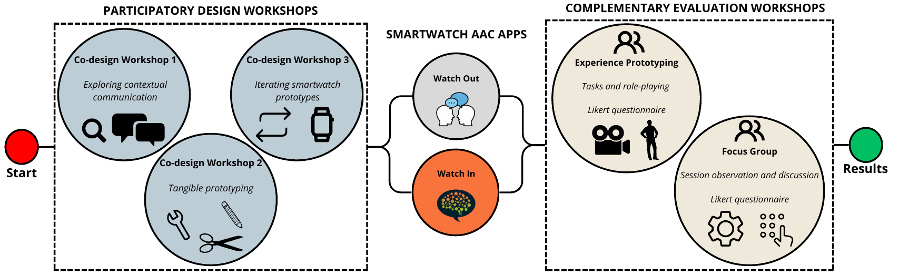
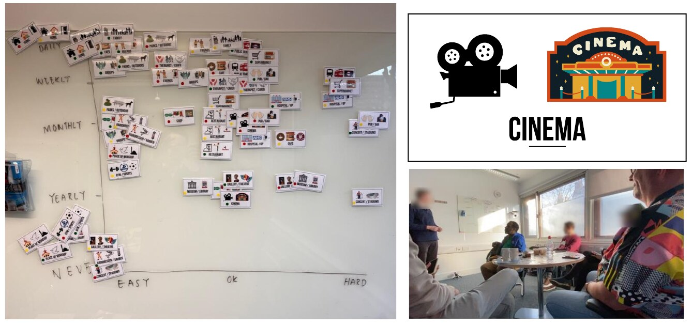
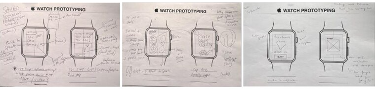
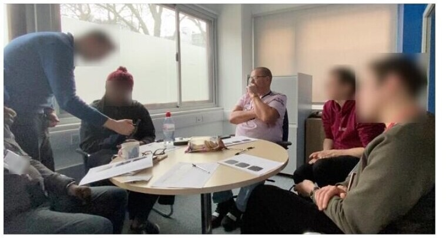
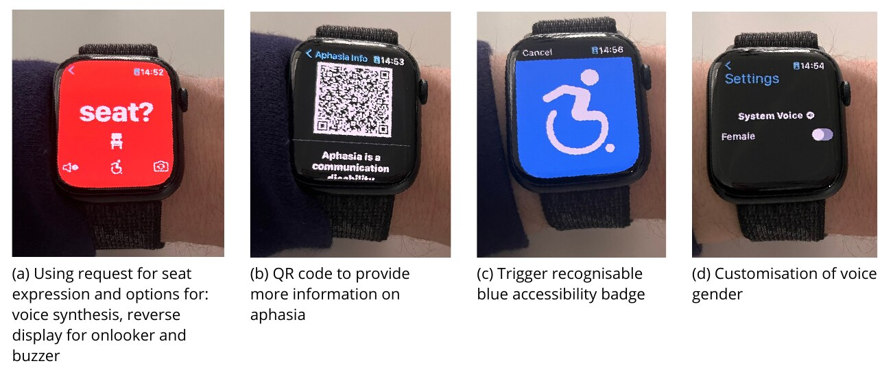
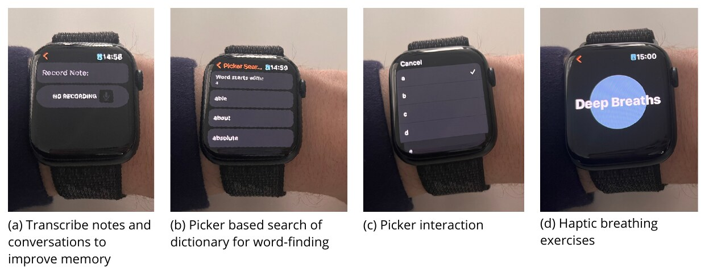
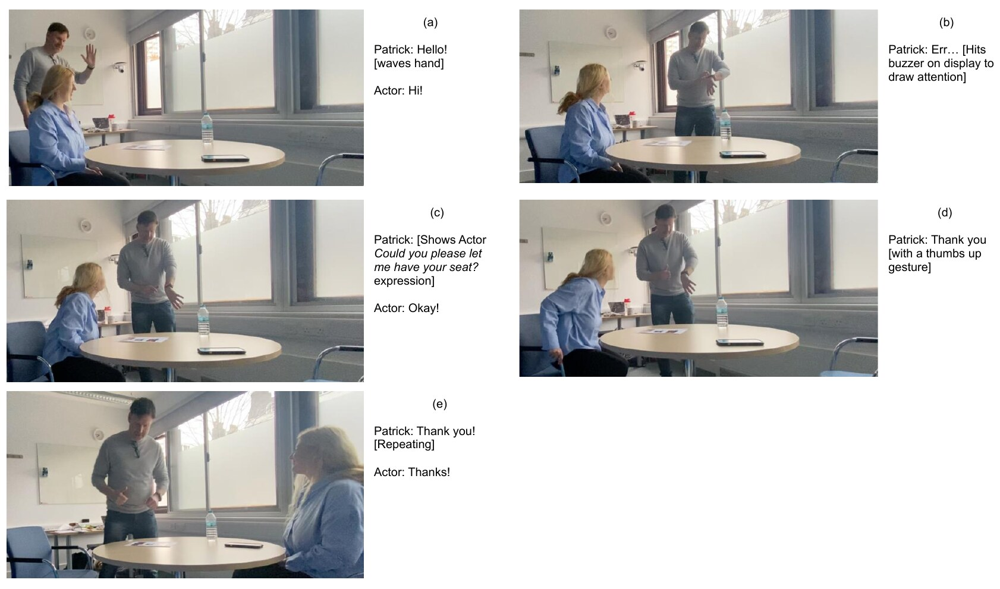

Watch Your Language

Mainstream high-tech AAC can be bulky, conspicuous and difficult to carry. Held between two people, it can also obstruct eye contact, gesture and speech. Watch Your Language explored a more discreet alternative: communication support already on the wrist. Co-designed with people with aphasia in 2023, the research produced two Apple Watch apps. Watch Out supports difficult public encounters; Watch In privately supports memory, word-finding and breathing. Both act as a safety net—not a replacement voice.

Participatory design workshops
Three workshops brought together four people with moderate to severe aphasia and a speech and language therapist at Aphasia Re-Connect.
Workshop 1 used 20 context cards and a large communication grid to compare everyday situations. Busy public places, unfamiliar people and pressure to respond quickly emerged as recurring barriers. Explaining aphasia to strangers was itself exhausting.

Workshop 2 used paper watch faces, cut-out wireframes and craft materials to prototype without relying on speech alone. Three ideas emerged: a word finder, a public phrase display and private support for memory and breathing.

Workshop 3 tested those ideas as working prototypes on 40mm and 45mm watches. Feedback shaped the final apps—from looping large text and an attention buzzer to voice controls, a disability badge and a QR-linked aphasia explainer.

Apps: Watch Out and Watch In
Watch Out supports face-to-face communication in public. Eight expressions cover common needs: asking for help or a seat, requesting more time and explaining a hidden disability. Messages appear as large looping text and can be rotated, spoken aloud or paired with an attention buzzer.

Watch In stays private to the wearer. It records important parts of conversations for later recall, helps recover words from their first letter and uses haptics to guide slow breathing. Trusted supporters can add personally important words.

Evaluating communication, not just usability
Five people with aphasia tested both apps through role-play with an unfamiliar actor: requesting a seat, explaining aphasia and recording part of a conversation. Video analysis examined the whole interaction—not just taps—including speech, gaze, gesture and physical distance.

Across 244 coded interactions, speech and gesture remained central. Participants moved the watch towards the actor, paired messages with speech and held it close for QR scanning. The watch joined the conversation without taking ownership of it. The study also exposed friction: Watch In required most navigation assistance, small targets needed refinement and participants preferred the larger 45mm display. A follow-up focus group called for larger text, slower speech and more personal information.
Bottom line
Smartwatch AAC works best as a safety net: available when communication breaks down, but small enough to leave space for speech, gesture, eye contact and the other person. Watch Your Language received the Best Student Paper Award at ASSETS 2023. The current open-source app brings Watch Out and Watch In together across iPhone and Apple Watch, with no account, advertising, analytics, subscription or developer-operated server.
The video below accompanied the paper's presentation at ASSETS 2023 in New York, USA.
Open-source workshop toolkit
The original materials from the 2023 workshops: 20 communication context cards, watch-scale sketching sheets and cut-out wireframe components. Download, print and adapt them for your own co-design sessions.